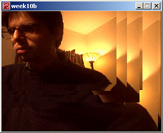
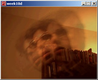
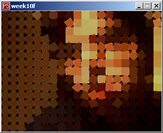
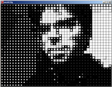

Week 10 -- Intro to Digital Image Processing cntd. . .
back to syllabusWorking with live video
In processing, we can deal treat a live video image the same way we treat a BImage object. We can draw a frame to the screen (multiple times / at varying scales, etc.) and we can access its pixels.There are a few things we'll need to do in order to get set-up for video. First, you'll need to have a video camera (duh), connect it to your machine, and install the proper drivers. If you're on a mac, you should be all set. On a PC, however, you'll need to make sure you have quicktime installed (http://www.apple.com/quicktime/). PCs also require a vdig to allow quicktime to take over capturing -- you can get a free one here: http://www.vdig.com/WinVDIG/.
To start the video stream, you'll want to call the beginVideo function. beginVideo takes 3 parameters, the width and height of the captured video and desired frames per second. Note that these are fixed values that cannot be changed as the program runs. Reference links to Processing Site
beginVideo()
endVideo()
videoEvent()
video
beginVideo(320, 240, 15);Once you've started capturing, you can then draw the video to the screen just as you would with a BImage. The video variable always contains the most recently captured video frame.
image(video, 0, 0);This first example draws the video to the screen at point (0,0) with a width and height determined by mouseX and mouseY. Note the use of "videoEvent" -- while this is not required, this example shows that we are only drawing a new frame when one is available.

source code
This next example demonstrates that we can take an existing pixel point processing example from week 9 and apply the same effect to a live video stream.
source code
This third example shows how we could use the "tint" command to average frames together, creating a motion blur effect.

source code
An example of "creative visualization" -- each pixel from the video source is drawn as a rectangle with rotation based on brightness.

source code
Simple black and white example. Each pixel is a white rectangle, size determined by brightness.

source code
CONTINUE ON TO 2. . .
back to syllabus